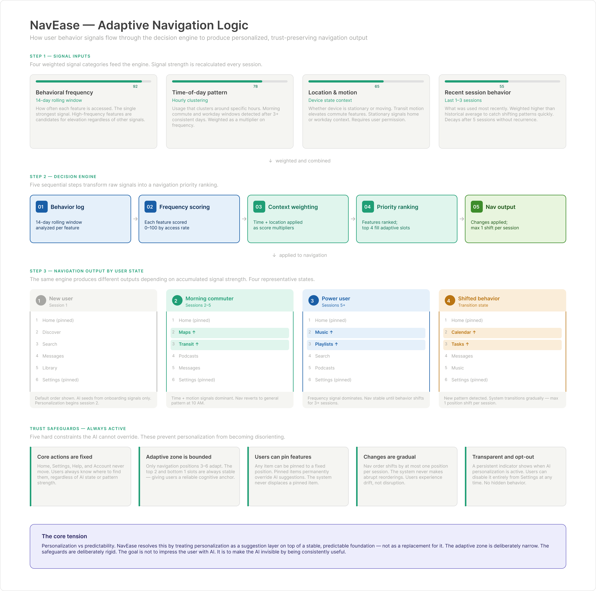

Case Study 002 · Concept Exploration
Adaptive UX · Behavioral Design · Mobile Navigation
NavEase
Designing software that adapts to people, not the other way around.
- Role
- UX Strategist & Product Designer
- Project Type
- Self-directed concept exploration
- Focus
- Adaptive UX, Navigation, Accessibility, Responsible AI
- Tools
- Figma, PowerPoint, Venngage
The Observation
Every interface contains friction. Most product teams underestimate how it accumulates: every redundant tap, every wrong branch, every moment a user pauses to look for something they've looked for before. These are small costs, but they compound into abandonment.
For most of computing history, software has worked one way: one interface, and everyone uses it the same way. If it doesn't fit you, you learn it. I've watched this play out across my career, in stores, in IT support, and in the tech side of church life. A new system shows up. People get trained on it. The ones who struggle get called "not tech-savvy." And the system never changes.
Why is the person always the one doing the adapting?
NavEase began as an exploration of the opposite approach. AI makes it possible, for the first time, for software to pay attention to how a specific person actually uses it: where they hesitate, back up, or give up. And it can respond. NavEase proposes a framework for making that friction visible, measurable, and systematically reducible, with an adaptive navigation layer as the way the system acts on what it learns.
The working hypothesis: users rarely abandon apps because a product lacks value. They abandon because the path to value is obstructed by menus that don't match their mental models, features buried too deep, and onboarding that teaches nothing useful at the moment it's needed.
Mapping Friction
Heuristic analysis surfaced six friction patterns that consistently disrupt the path to value and create unnecessary effort.
Confusing menus & repeated loops
Complex menu structures send users cycling through multiple areas to find information that should be surfaced clearly.
Buried features
Important tools exist but aren't discoverable, which reduces adoption and engagement.
Too much at once
Competing information creates decision fatigue. High-level navigation is visible while deeper value stays buried.
Static tutorials
One-time tutorials that don't adapt leave users stranded the moment they explore on their own.
No adaptation
Every user receives the same experience regardless of their behavior or needs.
Developer blind spots
Teams lack real-time visibility into exactly where users struggle within their products.
Friction is not a user problem. It's a system design problem.
The Concept
What if the interface adapted to the user instead of the other way around?
Adaptation shouldn't be an accessibility feature. It should be the interface.
A layer, not a redesign. One of the first decisions was that NavEase would run alongside an existing application instead of replacing it. Businesses have already invested in the systems they run, and asking them to start over is a hard sell. A redesign also only fixes the problems you can see on the day it ships. A layer keeps learning. It can meet the next person where they are, even if that person looks nothing like the last one.
Proposed capabilities
Adaptive navigation
Adjusts menu priority based on individual behavior, reducing friction over time.
Contextual tooltips
In-context guidance that replaces the one-time tutorials users skip and forget.
Predictive shortcuts
Surfaces relevant features proactively based on usage patterns.
User flow mapping
Gives teams a visual map of how users actually move through their app.
Heatmap analytics
Shows where users tap, hesitate, and drop off.
Three design interventions
The concept targets the three highest-friction moments: finding things, getting started, and deciding to commit.
Clarify navigation
Simpler structure and labeling should help users find information faster.
- Task-based categories instead of generic items
- Clearer, user-centered labels
- Icons for faster visual scanning
- Visual hierarchy with clear active states
Guided onboarding
A short, step-by-step start should reduce drop-off and improve activation.
- 3-step onboarding wizard
- Progress indicator for orientation
- Personalization signals collected early
- Skipping always remains available
Value & trust
A clearer value proposition and trust signals should increase confidence.
- Value proposition above the fold
- Trust badges (security, privacy, uptime)
- Primary CTA above the fold
- Supporting secondary CTA
How the System Thinks
The adaptive layer doesn't randomly reorder navigation. It reads behavioral signals, identifies recurring friction, and gradually adjusts interface priorities to match how each person actually works. The goal isn't to impress users with personalization. It's to make friction invisible by removing it before anyone notices.


Signal inputs
Behavioral frequency
How often a feature is accessed. The strongest single signal.
Time-of-day pattern
Whether usage clusters around specific hours. Detected after 3+ consistent days.
Location & motion
Stationary suggests work or home; transit elevates commute features. Requires permission.
Recent behavior
Weighted above the historical average to catch shifting patterns quickly.
Decision engine
- Behavior log14-day rolling window analyzed across all signals.
- Frequency scoringEach feature scored 0–100 by frequency and recency.
- Context weightingTime and location applied as score multipliers.
- Priority rankingFeatures ranked; the top 4 fill the adaptive slots.
- Navigation outputApplied gradually, at most one position shift per session.
Four user states
New user
Default order. The model initializes from onboarding signals; personalization begins in session 2.
Commuter
Maps and Transit rise during the 7–9 AM window, then reset at 10 AM. Time and motion signals dominate.
Power user
Stabilizes around a dominant feature cluster. Changes slow as the pattern solidifies.
Shifted behavior
A new pattern is detected after 3 consecutive sessions, and navigation transitions gradually. Never abruptly.
Scenario: Sarah's morning commute
Sarah commutes every weekday, usually opening the app around 7:30 AM. She checks Maps, switches to Transit for her bus status, then queues a podcast. After four consistent days, NavEase elevates Maps and Transit to navigation positions 2 and 3 during the 7–9 AM window, without Sarah configuring anything. At 10 AM, navigation returns to her general pattern. Her commute features are always ready when she needs them, and she never notices the system changing.
Illustrative scenarioThe goal isn't to impress the user with AI. It's to make the AI invisible by being consistently useful.
Preserving User Trust
Adaptive interfaces carry a specific risk: they can feel unpredictable. Navigation that moves without warning creates cognitive load instead of reducing it. Five constraints are built into the concept as hard rules the AI cannot override, not as feature toggles.
01 · Core actions are fixed
Home, Settings, Help, and Account never move, so users always know where to find them regardless of AI state.
02 · The adaptive zone is bounded
Only positions 3–6 adapt. The top two and bottom slots stay stable, giving users a reliable anchor.
03 · Users can pin features
Any item can be pinned to a fixed position. Pinned items permanently override AI suggestions.
04 · Changes are gradual
At most one position shift per session. Users experience drift, not disruption.
05 · Transparent and opt-out
A persistent indicator shows when AI is active, and personalization can be turned off at any time in Settings.
This is the core tension in adaptive design: personalization versus predictability. NavEase resolves it by treating personalization as a suggestion layer on top of a stable, predictable foundation, not as a replacement for it. Adapting to someone also means listening when they tell you directly. A pin or an opt-out is the user's own instruction, and it outranks anything the model infers.
Responsible AI
This is where responsible AI gets practical. When a system bends to fit people, it respects them. When it forces people to bend, it filters out the ones who can't. Nobody writes that into the requirements. It happens anyway. Transparency is treated as a non-negotiable requirement, not a feature added at the end.
Bias prevention
Diverse training data, regular audits, and human review checkpoints so the system never learns patterns that disadvantage any group.
Compliance & security
Designed for GDPR and HIPAA from the start, with data anonymized at collection and no third-party sharing.
Transparency
Users are always told when AI is shaping their navigation. No hidden personalization, and opting out is respected.
Risk framework
Six risk categories, each with a planned response.
Cybersecurity
End-to-end encryption, OAuth 2.0, and third-party audits before launch.
Algorithm bias
Demographically diverse training data and bias audits built into each release.
Data privacy
Privacy by design: anonymized data and zero third-party sharing.
Regulatory
Legal review at phase gates, with ongoing monitoring after launch.
Technical debt
Independently deployable services and a maintained debt register.
User adoption
A beta cohort and onboarding tested with real users before general release.
Critical Paths
Four user flows map where people are most likely to choose the wrong branch, and where the adaptive layer intervenes.
First-time onboarding
The highest abandonment risk. A long setup wizard is where new users quit, so the concept uses three steps, defers remaining preferences until they're relevant, and starts personalization at step one.
Feature discovery
Items lower in a menu tend to go unseen. Instead of relying on menu position, the adaptive layer surfaces what's relevant to each person.
Returning user
The feedback loop improves navigation each session. Personalization stabilizes by session five and keeps refining from there.
Help-seeking
People who open help are often lost in the navigation rather than looking for information, so contextual tooltips replace static tutorials. Where a person is available to help, such as a support agent or staff member, repeated back-outs from the same screen can signal them to step in. The system spots the pattern; the person does the helping.
Accessibility & Tradeoffs
Accessibility is a design constraint from the start, not a post-launch audit.
Contrast & legibility
Text and interactive elements meet AA contrast (4.5:1 for text, 3:1 for UI components), checked against both light and dark backgrounds.
Screen reader compatibility
Semantic structure and landmark roles make navigation fully usable without a mouse. Each onboarding step communicates its state through structure, not just position.
44px minimum
Every navigation item has at least a 44×44px touch area, per WCAG 2.5.5.
Respecting preferences
Navigation changes honor prefers-reduced-motion: instant state changes instead of animation, with no loss of function.
Design tradeoffs
Progressive onboarding over complete setup
People abandon long forms before submitting. A short wizard collects enough signal to personalize without demanding commitment up front. Remaining preferences surface in context as people use the product.
Flattened navigation over full exposure
Exposing every feature adds cognitive load without adding clarity. The adaptive layer surfaces what's relevant, so navigation stays simple while depth stays reachable. The constraint forced a better system, not a compromise.
Trust-first hero over feature-first hero
People who leave before scrolling never reach the feature descriptions. The likely blocker isn't a lack of information; it's a lack of confidence. Trust signals go above the fold to address that directly.
Proposed Delivery Plan
A 20-week roadmap to take the concept from research to launch.
- Planning · Wk 1–4User research, personas, risk assessment, budget planning
- Design · Wk 5–8Wireframes, prototyping, usability testing, design system
- Development · Wk 9–14Front end, back-end APIs, model training, database
- Testing · Wk 15–18QA, security audit, performance, beta rollout
- Deployment · Wk 19–20Cloud deployment, monitoring, go-to-market, launch
Proposed architecture
A React front end, a Python/Django back end, PostgreSQL, and auto-scaling cloud infrastructure on AWS, built as microservices with GDPR and HIPAA compliance in mind from day one.
Validation Plan
No user testing has been conducted on this concept. Rather than presenting invented results, here's what I'd want to validate before treating any of these ideas as proven, and how I'd test each one.
| Hypothesis | Proposed Test | Success Threshold |
|---|---|---|
| Adaptive navigation improves feature discovery over a static menu. | Moderated usability sessions comparing task completion on adaptive vs. static navigation. | Faster time-to-feature and fewer wrong turns for the adaptive version, without a drop in confidence. |
| Gradual adaptation feels less disorienting than immediate reordering. | A/B comparison of gradual vs. instant navigation changes using the same underlying logic. | Lower self-reported confusion and no increase in mis-taps for the gradual version. |
| Users understand why navigation changed. | Post-session interviews asking participants to explain a change they noticed. | Most participants can correctly describe why the interface changed, unprompted. |
| Screen reader and keyboard users can perceive adaptive changes. | Assistive-technology usability sessions with adaptive navigation active. | Changes are announced or discoverable without sighted, mouse-based exploration. |
Every row is a proposed future validation step, not a completed study.
Reflection & What's Next
The exploration moved through four stages: an early concept sketch, navigation iteration, behavior modeling, and a final concept. It established a reusable framework for adaptive products: behavior-driven navigation, progressive disclosure to reduce complexity, and hard trust constraints that keep personalization predictable.
Next steps
Run the validation plan
Start with moderated sessions comparing adaptive and static navigation.
Personalization beyond navigation
Extend the model into feature discovery and content surfacing.
Long-term engagement
Design for 30, 60, and 90-day retention, not just the first session.
Continuous measurement
An analytics review cadence that surfaces new friction before it compounds into churn.
The larger idea behind NavEase isn't really about navigation. It's about who carries the burden of adapting. For most of computing history, that has been the person. AI makes it possible to hand that job to the system instead, and NavEase is one worked example of what that could look like. AI shouldn't replace the people-first moment. It should make it better: the machine does what it's good at, and the person does what only a person can do.
Friction is a system problem. NavEase treats it like one.
By making behavioral patterns visible, quantifiable, and actionable, the concept aims for a navigation experience that improves over time. Not because it's clever, but because it's paying attention.